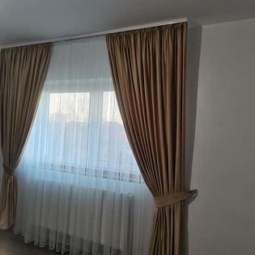
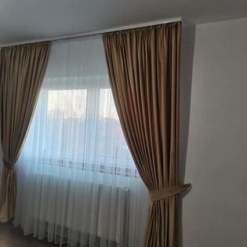
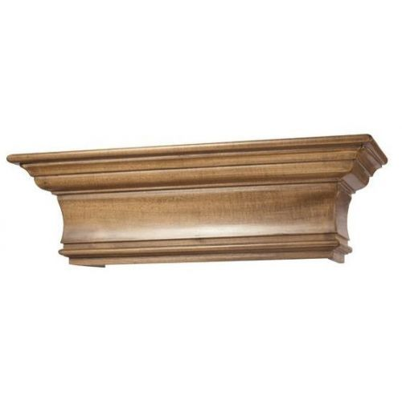
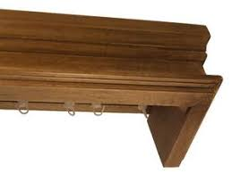
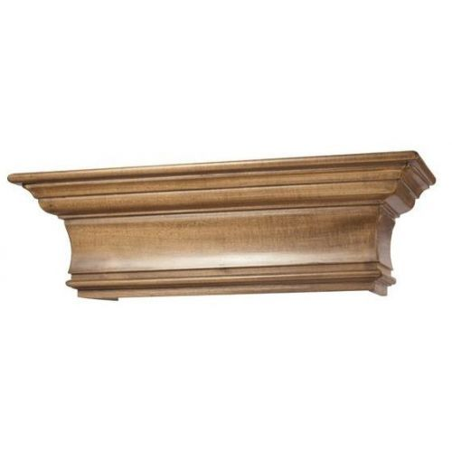
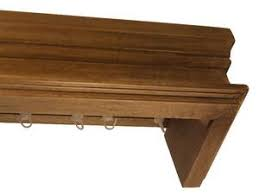

Galeriile de perdea și draperie pe tavan sau pe perete poate să ofere camerei o senzație extraordinară. Este folosit un material cald, lemnul de tei, împreună cu șină de aluminiu, care ajută la culisarea cârligelor Perdelele și draperiile culisează foarte ușor pe galeriile din lemn cu ajutorul șinelor de aluminiu. Galeriile de perdele și draperii pentru tavan se potrivesc unde spațiul între geam și tavan este îngust. Este o alegere bună, dacă doriți să montați galeria pentru perdele și draperii din perete în perete.

Șina din aluminiu cu două canale cu mască se montează direct în tavan prin șuruburi. Pentru fixarea în tavan de rigips se folosesc molly ancore metalice sau melci rigips. O gamă variată de sine perdele și draperii este disponibilă în magazin. Alege o sina dublă sau o sina simplă și creează spațiul personalizat ție! Creează un spațiu modern și sofisticat cu sine perdele pentru tavan din aluminiu.
 



Cornișe din lemn masiv Galerii de perdele din lemn masiv, tip Cornișă Galeriile de perdea și draperie din lemn masiv poate să transforme camera într-un loc unde omul se simte și mai bine. Este folosit un material masiv, lemnul de tei cu șină de aluminiu, care ajută la culisarea ușoară a cârligelor. Perdelele și draperiile se pot trage mai ușor pe galeriile din lemn cu ajutorul șinelor de aluminiu.
Galeriile de perdele și draperii din lemn masiv pot să ofere camerei un aspect mai cald și mai confortabil. Este folosit un material masiv, lemnul de tei împreună cu șină de aluminiu, care ajută la culisarea ușoară a cârligelor. Perdelele și draperiile se pot trage mai ușor pe galeriile din lemn cu ajutorul șinelor de aluminiu.